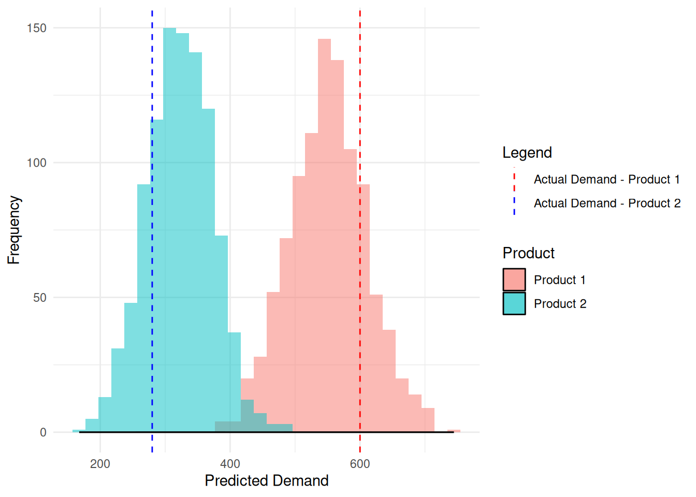

Evaluating Probabilistic Forecasts with Energy Score
Forecasting
Scoring Rules
R
Tutorial
Introduction
Accurately forecasting the demand for pharmaceutical products is crucial for optimizing inventory management and ensuring continuous availability. Traditional point forecasts provide a single predicted value but fail to capture the uncertainty inherent in real-world scenarios. Probabilistic forecasting addresses this by offering a range of possible outcomes with associated probabilities, enabling better decision-making in supply chain management.
Deterministic vs. Probabilistic Forecasting
Deterministic (Point) Forecasting predicts a specific value for future demand. For example, forecasting that the demand for a specific drug next month will be 500 units. While straightforward, this approach does not convey the uncertainty or variability in demand, which can lead to stockouts or overstocking.
Probabilistic Forecasting, on the other hand, provides a distribution of possible demand outcomes. Instead of a single number, it might predict that there’s a 70% chance that demand will be between 480 and 520 units. This approach acknowledges uncertainty and enables supply chain planners to make more informed inventory decisions.
Example: Demand Forecast for a Pharmaceutical Drug
The first graph shows a deterministic forecast, which provides a single predicted demand value for the future but does not convey uncertainty. The second graph presents a probabilistic forecast, illustrating possible future paths, helping businesses plan for variability.
Understanding the Energy Score
To evaluate the quality of probabilistic forecasts, we use scoring rules. The Energy Score (ES) is particularly useful for assessing both univariate and multivariate forecasts. It measures the accuracy of the predicted distribution compared to the actual observed demand (i.e., it quantifies how well the forecasted distribution aligns with the observed value).
Univariate Energy Score Calculation
For a single time series (one product), the Energy Score (ES) is given by:
\[ ES(F, y) = \mathbb{E}_F \left[ \|X - y\| \right] - \frac{1}{2} \mathbb{E}_F \left[ \|X - X' \| \right] \]
where:
- \(F\) is the forecasted probability distribution.
- \(y\) is the actual observed value.
- \(X\) and \(X'\) are independent samples from the forecasted distribution.
- \(\|\cdot\|\) represents the absolute distance (since we are dealing with univariate values).
- The first term, \(\mathbb{E}_F \left[ \|X - y\| \right]\) measures how far the forecasted values are from the observed demand.
- The second term, \(\frac{1}{2} \mathbb{E}_F \left[ \|X - X' \| \right]\) accounts for the spread of the forecasted distribution.
Lets take an example from demand for a pharmaceutical product, suppose:
Forecasted samples for Product 1 follow a normal distribution: \(X \sim \mathcal{N}(550, 60^2)\)
Observed demand: \(y = 600\)
The histogram above shows the distribution of forecasted demands, with the red dashed line indicating the actual observed demand.
Step-by-Step Calculation
Compute the first term: \[ \mathbb{E}_F \left[ \|X - y\| \right] \]
Take the average absolute difference between each forecasted sample and the observed demand (600):
\[ \frac{1}{m} \sum_{i=1}^{m} |X_i - 600| \]
Compute the second term: \[ \frac{1}{2} \mathbb{E}_F \left[ \|X - X'\| \right] \]
Take all possible pairs of forecasted samples and compute their absolute differences:
\[ \frac{1}{2m^2} \sum_{i=1}^{m} \sum_{j=1}^{m} |X_i - X_j| \]
Compute the Energy Score:
Subtract the two terms to get the final Energy Score.
We can compute the ES using scoringRules package in R (read more).
library(scoringRules)
set.seed(123)
forecast_samples_product1 <- rnorm(1000, mean = 550, sd = 60) # Forecasted demand
actual_demand_product1 <- 600 # Observed demand
# Compute the Energy Score for Product 1
es_univariate <- es_sample(y = actual_demand_product1, dat = matrix(forecast_samples_product1, nrow = 1))
print(paste("Univariate Energy Score:", round(es_univariate, 4)))[1] "Univariate Energy Score: 29.457"Multivariate Energy Score Calculation
For multiple time series (joint demand forecasting), the multivariate Energy Score is:
\[ ES(F, y) = \mathbb{E}_F \left[ \|X - y\| \right] - \frac{1}{2} \mathbb{E}_F \left[ \|X - X'\| \right] \]
where:
- ( X ) and ( X’ ) are now vectors representing forecasted values for both Product 1 and Product 2.
- ( y ) is now a vector containing the actual observed values for both products.
- ( || ) is the Euclidean distance (not just absolute value) because we now have multiple dimensions.
Suppose we have two products now;
Forecasted distributions: \[ \begin{bmatrix} X_1 \\ X_2 \end{bmatrix} \sim \mathcal{N} \left( \begin{bmatrix} 550 \\ 320 \end{bmatrix}, \begin{bmatrix} 3600 & 1500 \\ 1500 & 2500 \end{bmatrix} \right) \]
Observed demand vector: \[ y = \begin{bmatrix} 600 \\ 280 \end{bmatrix} \]

Step-by-Step Calculation
Compute the first term:
\[ \mathbb{E}_F \left[ \|X - y\| \right] \]
Compute the Euclidean distance between each forecast sample and the actual observed demand vector:
\[ \frac{1}{m} \sum_{i=1}^{m} \sqrt{(X_{i,1} - y_1)^2 + (X_{i,2} - y_2)^2} \]
Compute the second term:
\[ \frac{1}{2} \mathbb{E}_F \left[ \|X - X'\| \right] \]
Compute pairwise Euclidean distances between all forecasted sample pairs:
\[ \frac{1}{2m^2} \sum_{i=1}^{m} \sum_{j=1}^{m} \sqrt{(X_{i,1} - X_{j,1})^2 + (X_{i,2} - X_{j,2})^2} \]
Compute the Multivariate Energy Score:
Subtract the two terms to get the final Multivariate Energy Score.
library(MASS)
# Define number of dimensions and samples
d <- 2 # Number of products
m <- 1000 # Number of forecast samples
# Define mean vector and covariance matrix
mu <- c(550, 320)
Sigma <- matrix(c(3600, 1500,
1500, 2500), nrow = d, ncol = d)
# Generate forecast samples
demand_forecast_multi <- t(mvrnorm(m, mu = mu, Sigma = Sigma))
# Define observed demand vector
actual_demand_multi <- c(600, 280)
# Compute the Multivariate Energy Score
es_multivariate <- es_sample(y = actual_demand_multi, dat = demand_forecast_multi)
# Print result
print(paste("Multivariate Energy Score:", round(es_multivariate, 4)))[1] "Multivariate Energy Score: 44.319"Key Takeaways
Interpretation
A lower Energy Score indicates a better probabilistic forecast. Comparing different forecasting models using the Energy Score helps in selecting the model that best represents the underlying demand uncertainty.
Univariate Energy Score:
- If you compute
es_sample(y, dat)for a single time series (one product), it returns one scalar value representing the accuracy of that probabilistic forecast compared to the observed value. - Example: If forecasting demand for Product 1 only, it outputs one Energy Score.
Multivariate Energy Score:
- When forecasting multiple time series jointly (e.g., multiple products),
es_sample(y, dat)computes one single Energy Score that evaluates the overall accuracy of the joint probabilistic forecast. - The forecast considers both marginal distributions (each product’s demand) and their dependency structure (correlation between products).
Key Difference:
| Type | Forecasted Elements | Energy Score Output |
|---|---|---|
| Univariate | One product (single time series) | One Energy Score |
| Multivariate | Multiple products (joint time series) | One Energy Score for all series |
Why One Value for Multivariate?
- The Energy Score is a proper scoring rule that measures the accuracy of the entire probabilistic distribution of multiple time series.
- It captures how well the forecasted joint distribution matches the observed values across all series.
Why Euclidean Distance?
- In the univariate case, we use absolute difference \(|X - y|\) since we are dealing with a single variable.
- In the multivariate case, we use Euclidean distance \(\|X - y\|\) because we now have multiple variables (e.g., multiple products with correlated forecasts).
When evaluating multiple products together, we must assess how far off the entire forecast vector is from the actual vector. Euclidean distance considers both the magnitude of the forecast errors and their combined effect across multiple dimensions.
- Captures Correlated Forecast Errors.
- Measures Overall Forecast Accuracy Across Multiple Products.
If Product 1 and Product 2 have correlated demand patterns, Euclidean distance captures how well the joint forecast aligns with the observed reality. A simple sum of absolute differences (like in the univariate case) would ignore these relationships.
Why Do We Have \(\frac{1}{2}\) in the Second Term of the Energy Score Formula?
Double Counting in Pairwise Distances
The second term involves taking all pairwise distances between forecasted samples:
\[ \mathbb{E}_F \left[ \|X - X'\| \right] = \frac{1}{m^2} \sum_{i=1}^{m} \sum_{j=1}^{m} \|X_i - X_j\| \]
where:
- \(m\) is the number of forecast samples.
- Each pair \((X_i, X_j)\) is counted twice because we compute distances between all pairs \(X_i\) and \(X_j\).
- Thus, to avoid over-weighting this term, we include \(\frac{1}{2}\) to correct for double counting.
Maintaining Proper Scale of the Score
- The Energy Score is designed to measure how concentrated the forecast distribution is around the actual observed value.
- Without the \(\frac{1}{2}\), the second term would be too large, making the score too negative, distorting the interpretation.